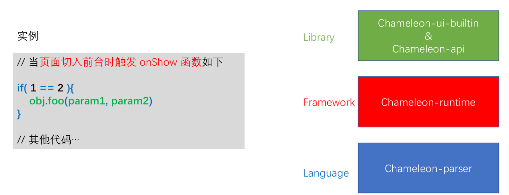

定制扩展端(Terminal expand)
希望扩展支持 头条小程序、淘宝小程序、高德小程序、react-native？ 你只需按标准流程即可扩展，敬请期待：
- xxx-runtime ：运行时
- xxx-ui: 扩展组件
- xxx-api: 基础api
- xxx-linter: 语法检查器
- xxx-parse: 解析器
原理解释
实现原理图

首先任何一份应用层的高级语言代码块分成几层：语言层（Language）、框架层（Framewrok）与库层（Library）：
Language —— 通俗来说，实现程序所需的基本逻辑命令：逻辑判断(if)、循环(for)与函数调用（foo())等。
Framewrok —— 通俗来说，完成一个 App 应用交互任务所需规范，例如生命周期（onLoad、onShow）、模块化与数据管理等。
Library —— 可以理解就是“方法封装集合”。比如 Web 前端中 Vue 更适合叫框架，而 jQuery 更适合叫库；Android 系统下 activity manager + window Manager View System 等的集合叫框架，而 SQLite 、libc 更适合叫库。
对应到 Chameleon 就是这样：

你可以理解 Chameleon 为了实现“让 MVVM 跨端环境大统一”的目标做了以下工作：
- 定义了标准的 Language(CML DSL)、Framework 与 Library（内置组件和 API）协议层。
- 在线下编译时将 DSL 转译成各端 DSL，只编译 Language 层面足够基础且稳定的代码。
- 在各个端运行时分别实现了 Framework 统一，在各个端尽量使用原有框架，方便利用其生态，这样很多组件可以直接用起来。
- 在各个端运行时分别实现了 Library（内置组件和 API）。
- 为用户提供多态协议，方便扩展以上几方面的内容，触达底层端特殊属性，同时提升可维护性。
| 信息/协议 | 框架协议（Framework) | API接口协议（Library) | 内置组件协议（Library) | DSL协议（Language) | 用户可扩展协议 |
|---|---|---|---|---|---|
| 实现 | Chameleon Runtime | chameleon-api | chameleon-ui-builtin | chameleon tool | chameleon tool |
| 描述 | 各端引擎中按规范各自实现；实现框架生命周期、数据流向、尺寸单位、路由 | 各端引擎中按规范各自实现；为本地能力调用提供基类 | 各端引擎中按规范各自实现；为界面开发提供基类 | 编译转换（组件调用、循环、条件判断、事件回调关联、父子关系等等，不涉及具体什么组件该传什么参数）；提供标准数据驱动规范语法 | 多态协议标准；提供多端差异化实现。 |
实现思路很简单，所有设计为了 MVVM 标准化，不做多余设计，所以宏观的角度就像 Node.js（libuv）同时运行在 Windows 和 macOS 系统，都提供了一个跨平台抽象层。
如何扩展端
实现运行代码
按照标准协议实现 chameleon-runtime、chameleon-api、chameleon-runtime 框架
运行时框架：https://github.com/chameleon-team/chameleon-runtime
内置组件：https://github.com/chameleon-team/chameleon-ui-builtin
内置API：https://github.com/chameleon-team/chameleon-api